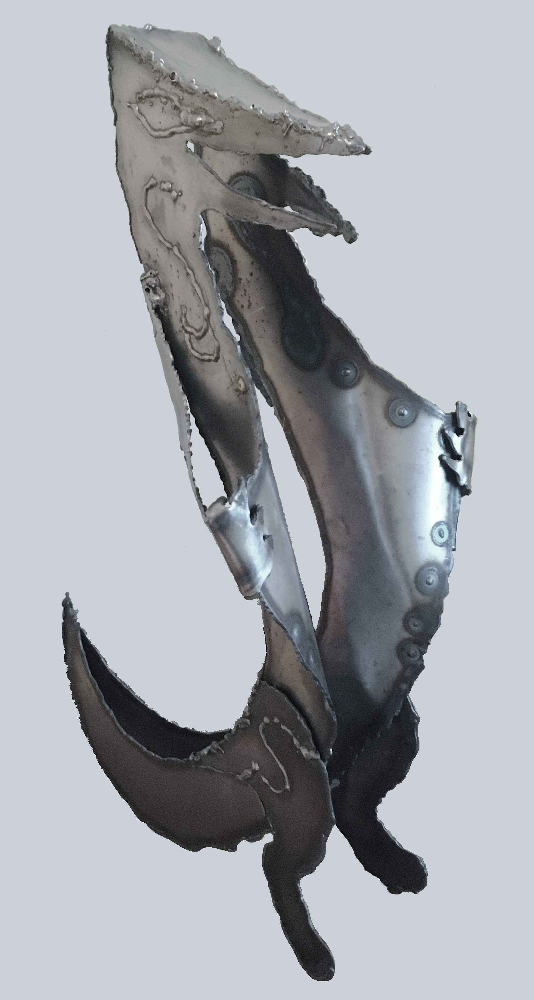
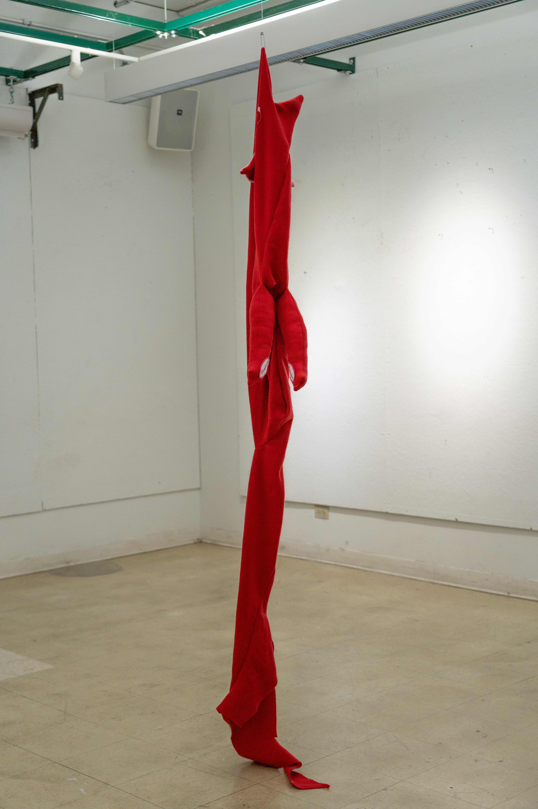
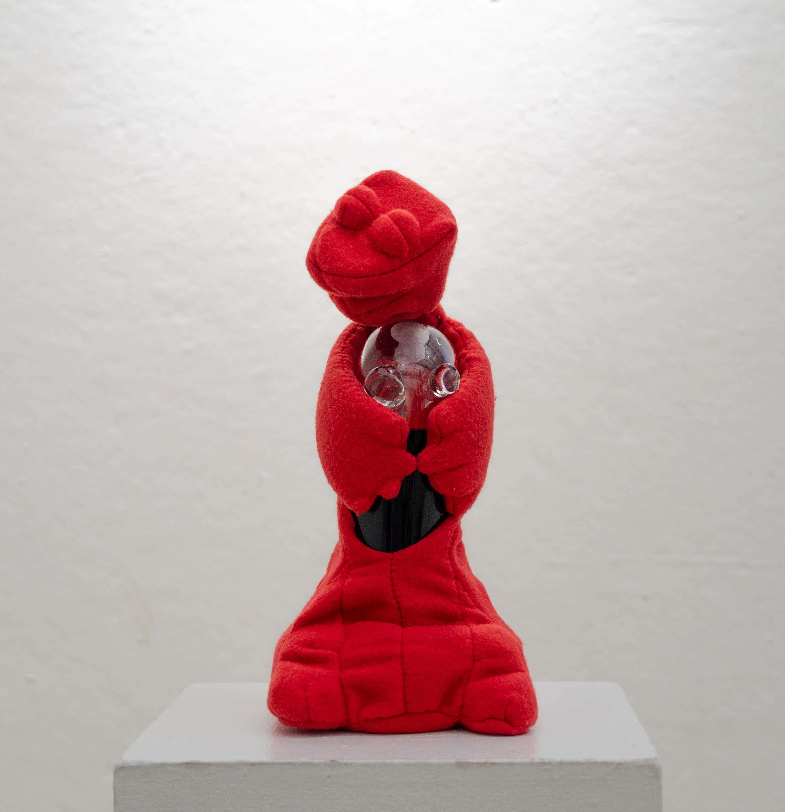

Foie d'Butch, 2022
Wet felted body with needle felted details, repurposed clothes

Pervert, 2023
Plasma cut steel with welded details

Mirror Dog, 2023
Repurposed mirror, red fleece, repurposed eyes

Friday Devil, 2025
Red fleece, pink jersey fabric, iron-on patches

Trophy To My Body, 2025
Glass, red fleece, root beer